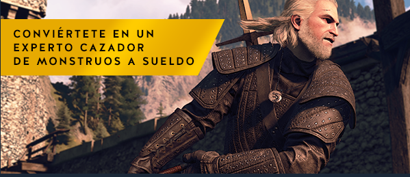
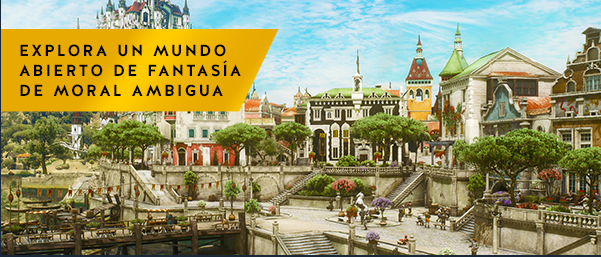

Eres Geralt de Rivia, cazador de monstruos. En un continente devastado por la guerra e infestado de criaturas, tu misión es encontrar a Ciri, la niña de la profecía, un arma viviente que puede alterar el mundo tal y como lo conocemos.

Adiestrados desde su infancia y mutados para obtener habilidades, fuerza y reflejos sobrehumanos, los brujos sirven como contrapeso al mundo infestado de monstruos en el que viven.
Destruye a tus enemigos de formas espantosas como cazador de monstruos profesional, armado con una gran variedad de armas mejorables, pociones de mutación y magia de combate.
Da caza a una amplia gama de monstruos exóticos: desde bestias salvajes que merodean por los pasos de montaña, hasta astutos depredadores sobrenaturales que acechan en las sombras de los callejones de ciudades densamente pobladas.
Invierte tus recompensas en mejorar tus armas y comprar armaduras personalizadas, o gástatelas en carreras de caballos, juegos de cartas, peleas a puñetazos y otros placeres que te ofrece la vida.

Creado para vivir aventuras interminables, el enorme mundo abierto de The Witcher establece un nuevo estándar en cuanto a tamaño, profundidad y complejidad
Recorre un mundo abierto fantástico: explora ruinas olvidadas, cuevas y naufragios, comercia con mercaderes y herreros enanos en las ciudades, y caza en llanuras, montañas y mares.
Trata con generales traicioneros, brujas retorcidas y miembros de la realeza corruptos para prestar servicios siniestros y peligrosos.
Toma decisiones que van más allá del bien y el mal, y afronta sus trascendentales consecuencias.